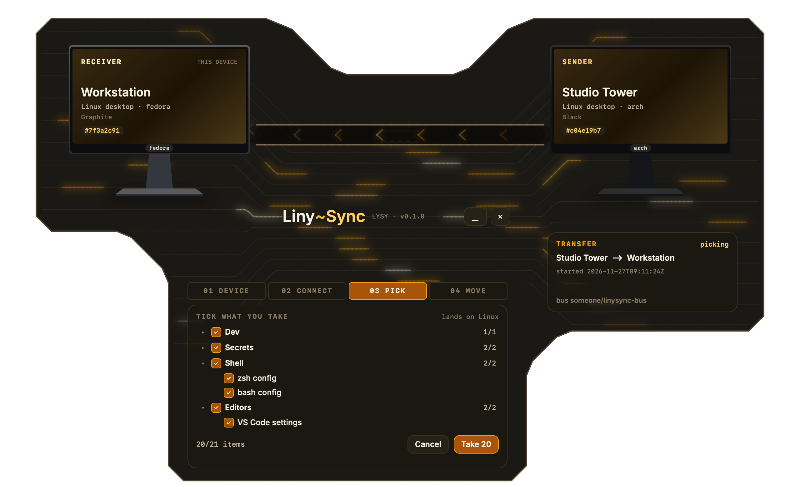
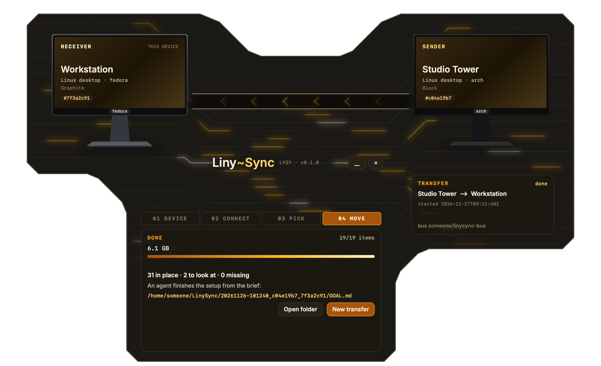

Each machine draws itself
On the Device tab you name this machine and choose how it is drawn: a laptop or a desktop, in four colours, with its distro's name on a small badge under the screen, read from /etc/os-release. All drawings are original shapes, no logos.

The machines on your account
Find devices on this account lists every Linux machine registered in your bus repo. Pick one, choose to send or to receive, and the other machine shows a request its owner approves or declines.

A tree you tick
The sender scans what it has. The receiver sees it as a tree grouped by kind, with where each item lands; ticking a group ticks everything in it.

Straight across, and it resumes
Only the picks travel, machine to machine over your network, as an authenticated XChaCha20-Poly1305 stream. A minute without a byte counts as a cut, and the receiver asks again for what has not arrived.

A brief your agent can act on
Each item lands at its path under the new home, and what was there is kept as .before-linysync. Then the receiver writes GOAL.md: what landed where, the problems, paths to rewrite and the package lists, so your agent installs the same tools with this distro's manager.
